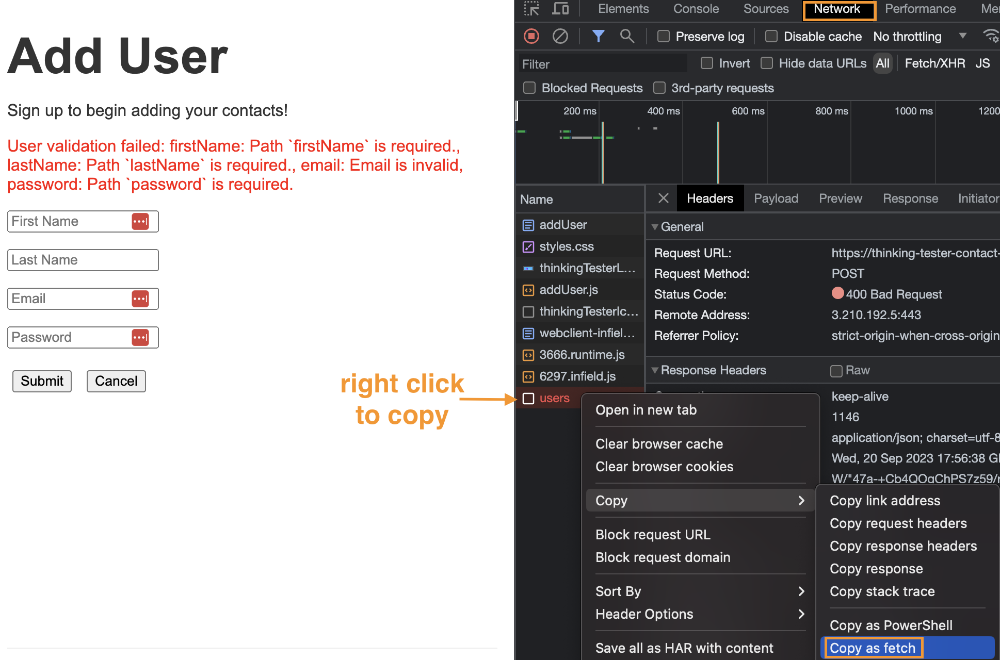
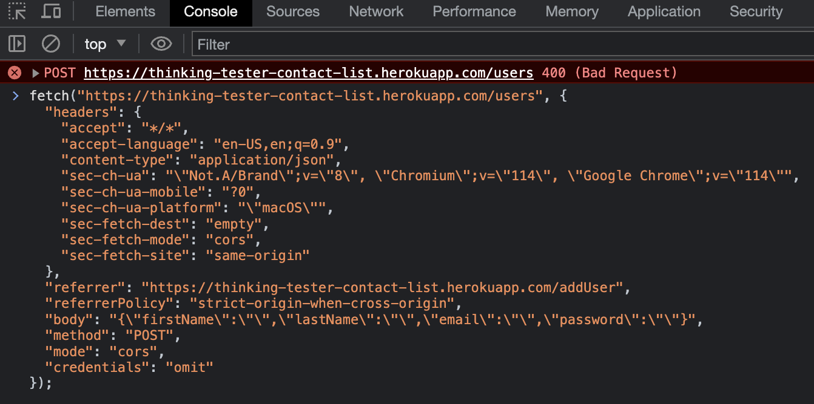

Hi there! 👋
I'm Yvette, a QA with over 4 years of experience. I specialize in designing and executing testing strategies and accessibility testing. I enjoy learning how things work and ensuring quality products are delivered. I'm looking for remote opportunities where I can continue to grow my technical skills.
You can contact me at yvettetran@gmail.com


Experience
View my full resume here.
Indeed.com, Remote
QA Team Lead, Oct 2022 - Mar 2023
Designed and executed test plans. Coordinated testing efforts and ensured product requirements were met by collaborating with designers, engineers, and product managers. Implemented QA processes to improve product quality and lead time.
Skills: designing test strategies, end to end testing, project management, implementing QA proccesses
QA Engineer II, Dec 2020 - Oct 2022
Investigated reported defects and collaborated with product team fix them. Worked with engineers to automate manual test cases.
Skills: test design, communication, debugging
QA Engineer I, Dec 2018 - Dec 2020
Owned manual testing for web and mobile changes. Utilized Chrome DevTools, Android Studio, and Xcode for testing. Wrote detailed test reports. Created and maintained numerous pages of technical documentation.
Skills: regression testing, functionality testing, smoke testing, documentation
Examples of my work
Technical Documentation - how to perform API testing using Chrome DevTools
Utilizing Chrome DevTools to Quickly Test an API
This guide will outline the steps to make a request to an API for testing through your Chrome browser. For this guide, we'll be using a QA test website and Chrome DevTools.
Step 1: Open your Chrome browser and load this test website https://thinking-tester-contact-list.herokuapp.com/addUser
Step 2: Once the website is done loading, right click anywhere on the site to click "inspect" to open Chrome DevTools.
Step 3: Click on the "network" tab. On the webpage, click on the "submit" button to trigger a network request.
Step 4: Under "Name", click on the request called "user". You can see the details of the request by clicking on the various tabs to see the status code, error messages, and the payload values of the request.
Step 5: Right click on "users" to navigate to "copy" and click on "Copy as fetch".
Step 6: Click on the "console" tab and paste the fetch request into the console. You'll now be able to edit the request and submit it by pressing the return/enter key to see how the API responds
This is how you can quickly verify how your API through Chrome DevTools.
Test Case Design - sample of test cases for a QA testing site
Test Case Samples
This is a sample of regression test cases for adding a user on a QA test website.
Test Case: Verify successful user creation
- Test Steps:
- Enter first name, last name, valid email, 7 or more character password
- Click "Submit" button
- Expected Results:
- Post request to /users returns status code 201.
- The user is redirected to the contact list page.